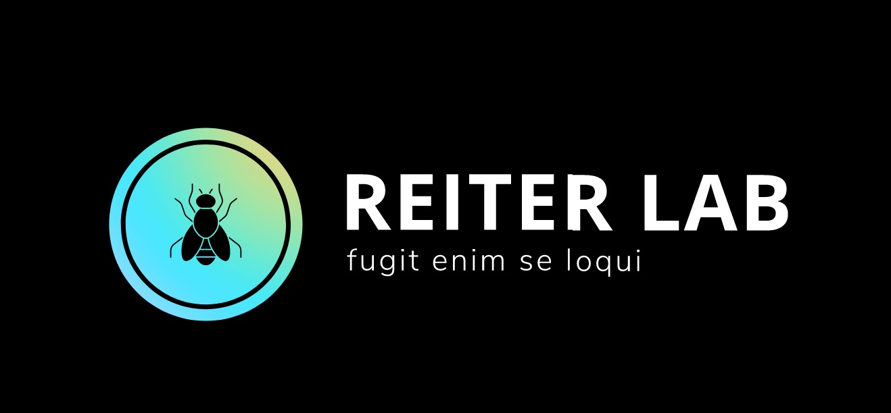

The University of Tennessee Health Science Center
2020
An Unbiased Drug Screen for Seizure Suppressors in Duplication 15q Syndrome Reveals 5-HT1A and Dopamine Pathway Activation as Potential Therapies.
Roy B, Han J, Hope KA, Peters TL, Palmer G, Reiter LT.
Biol Psychiatry. 2020 Apr 13:S0006-3223(20)31491-8. doi: 10.1016/j.biopsych.2020.03.021. Online ahead of print.
Biol Psychiatry. 2020.
PMID: 32507391
Transcriptomic and proteomic profiling of glial versus neuronal Dube3a overexpression reveals common molecular changes in gliopathic epilepsies.
Hope KA, Johnson D, Miller PW, Lopez-Ferrer D, Kakhniashvili D, Reiter LT.
Neurobiol Dis. 2020 Jul;141:104879. doi: 10.1016/j.nbd.2020.104879. Epub 2020 Apr 25.
Neurobiol Dis. 2020.
PMID: 32344153
Free article.
Behavioral characterization of dup15q syndrome: Toward meaningful endpoints for clinical trials.
DiStefano C, Wilson RB, Hyde C, Cook EH, Thibert RL, Reiter LT, Vogel-Farley V, Hipp J, Jeste S.
Am J Med Genet A. 2020 Jan;182(1):71-84. doi: 10.1002/ajmg.a.61385. Epub 2019 Oct 26.
Am J Med Genet A. 2020.
PMID: 31654560
Free PMC article.
2019
Correction to: Mechanisms underlying the EEG biomarker in Dup15q syndrome.
Frohlich J, Reiter LT, Saravanapandian V, DiStefano C, Huberty S, Hyde C, Chamberlain S, Bearden CE, Golshani P, Irimia A, Olsen RW, Hipp JF, Jeste SS.
Mol Autism. 2019 Nov 6;10:37. doi: 10.1186/s13229-019-0288-y. eCollection 2019.
Mol Autism. 2019.
PMID: 31709034
Free PMC article.
Behavioral characterization of dup15q syndrome: Toward meaningful endpoints for clinical trials.
DiStefano C, Wilson RB, Hyde C, Cook EH, Thibert RL, Reiter LT, Vogel-Farley V, Hipp J, Jeste S.
Am J Med Genet A. 2020 Jan;182(1):71-84. doi: 10.1002/ajmg.a.61385. Epub 2019 Oct 26.
Am J Med Genet A. 2020.
PMID: 31654560
Free PMC article.
The Drosophila Gene Sulfateless Modulates Autism-Like Behaviors.
Hope KA, Flatten D, Cavitch P, May B, Sutcliffe JS, O'Donnell J, Reiter LT.
Front Genet. 2019 Jun 19;10:574. doi: 10.3389/fgene.2019.00574. eCollection 2019.
Front Genet. 2019.
PMID: 31316544
Free PMC article.
Mechanisms underlying the EEG biomarker in Dup15q syndrome.
Frohlich J, Reiter LT, Saravanapandian V, DiStefano C, Huberty S, Hyde C, Chamberlain S, Bearden CE, Golshani P, Irimia A, Olsen RW, Hipp JF, Jeste SS.
Mol Autism. 2019 Jul 3;10:29. doi: 10.1186/s13229-019-0280-6. eCollection 2019.
Mol Autism. 2019.
PMID: 31312421
Free PMC article.
Clinical Trial.
A genome-wide enhancer/suppressor screen for Dube3a interacting genes in Drosophila melanogaster.
Hope KA, McGinn A, Reiter LT.
Sci Rep. 2019 Feb 20;9(1):2382. doi: 10.1038/s41598-019-38663-y.
Sci Rep. 2019.
PMID: 30787400
Free PMC article.
2018
Significant transcriptional changes in 15q duplication but not Angelman syndrome deletion stem cell-derived neurons.
Urraca N, Hope K, Victor AK, Belgard TG, Memon R, Goorha S, Valdez C, Tran QT, Sanchez S, Ramirez J, Donaldson M, Bridges D, Reiter LT.
Mol Autism. 2018 Jan 27;9:6. doi: 10.1186/s13229-018-0191-y. eCollection 2018.
Mol Autism. 2018.
PMID: 29423132
Free PMC article.
A recurrent de novo missense mutation in UBTF causes developmental neuroregression.
Toro C, Hori RT, Malicdan MCV, Tifft CJ, Goldstein A, Gahl WA, Adams DR, Fauni HB, Wolfe LA, Xiao J, Khan MM, Tian J, Hope KA, Reiter LT, Tremblay MG, Moss T, Franks AL, Balak C; C4RCD Research Group, LeDoux MS.
Hum Mol Genet. 2018 Feb 15;27(4):691-705. doi: 10.1093/hmg/ddx435.
Hum Mol Genet. 2018.
PMID: 29300972
Free PMC article.
Multisite Semiautomated Clinical Data Repository for Duplication 15q Syndrome: Study Protocol and Early Uses.
Ajayi OJ, Smith EJ, Viangteeravat T, Huang EY, Nagisetty NSVR, Urraca N, Lusk L, Finucane B, Arkilo D, Young J, Jeste S, Thibert R; Dup15q Alliance, Reiter LT.
JMIR Res Protoc. 2017 Oct 18;6(10):e194. doi: 10.2196/resprot.7989.
JMIR Res Protoc. 2017.
PMID: 29046268
Free PMC article.
Neuronal overexpression of Ube3a isoform 2 causes behavioral impairments and neuroanatomical pathology relevant to 15q11.2-q13.3 duplication syndrome.
Copping NA, Christian SGB, Ritter DJ, Islam MS, Buscher N, Zolkowska D, Pride MC, Berg EL, LaSalle JM, Ellegood J, Lerch JP, Reiter LT, Silverman JL, Dindot SV.
Hum Mol Genet. 2017 Oct 15;26(20):3995-4010. doi: 10.1093/hmg/ddx289.
Hum Mol Genet. 2017.
PMID: 29016856
Free PMC article.
Glial overexpression of Dube3a causes seizures and synaptic impairments in Drosophila concomitant with down regulation of the Na+/K+ pump ATPα.
Hope KA, LeDoux MS, Reiter LT.
Neurobiol Dis. 2017 Dec;108:238-248. doi: 10.1016/j.nbd.2017.09.003. Epub 2017 Sep 6.
Neurobiol Dis. 2017.
PMID: 28888970
Free PMC article.
Dental pulp stem cells for the study of neurogenetic disorders.
Victor AK, Reiter LT.
Hum Mol Genet. 2017 Oct 1;26(R2):R166-R171. doi: 10.1093/hmg/ddx208.
Hum Mol Genet. 2017.
PMID: 28582499
Free PMC article.
Review.
Etiology of Human Genetic Disease on the Fly.
Chow CY, Reiter LT.
Trends Genet. 2017 Jun;33(6):391-398. doi: 10.1016/j.tig.2017.03.007. Epub 2017 Apr 15.
Trends Genet. 2017.
PMID: 28420493
Review.
Culturing and Neuronal Differentiation of Human Dental Pulp Stem Cells.
Goorha S, Reiter LT.
Curr Protoc Hum Genet. 2017 Jan 11;92:21.6.1-21.6.10. doi: 10.1002/cphg.28.
Curr Protoc Hum Genet. 2017.
PMID: 28075485/span>
Free PMC article.
Dental Pulp Stem Cells Model Early Life and Imprinted DNA Methylation Patterns.
Dunaway K, Goorha S, Matelski L, Urraca N, Lein PJ, Korf I, Reiter LT, LaSalle JM.
Stem Cells. 2017 Apr;35(4):981-988. doi: 10.1002/stem.2563. Epub 2017 Jan 19.
Stem Cells. 2017.
PMID: 28032673
Free PMC article.
A Quantitative Electrophysiological Biomarker of Duplication 15q11.2-q13.1 Syndrome.
Frohlich J, Senturk D, Saravanapandian V, Golshani P, Reiter LT, Sankar R, Thibert RL, DiStefano C, Huberty S, Cook EH, Jeste SS.
PLoS One. 2016 Dec 15;11(12):e0167179. doi: 10.1371/journal.pone.0167179. eCollection 2016.
PLoS One. 2016.
PMID: 27977700
Free PMC article.
A Rare Inherited 15q11.2-q13.1 Interstitial Duplication with Maternal Somatic Mosaicism, Renal Carcinoma, and Autism.
Urraca N, Potter B, Hundley R, Pivnick EK, McVicar K, Thibert RL, Ledbetter C, Chamberlain R, Miravalle L, Sirois CL, Chamberlain S, Reiter LT.
Front Genet. 2016 Nov 25;7:205. doi: 10.3389/fgene.2016.00205. eCollection 2016.
Front Genet. 2016.
PMID: 27933089
Free PMC article.
The Drosophila melanogaster homolog of UBE3A is not imprinted in neurons.
Hope KA, LeDoux MS, Reiter LT.
Epigenetics. 2016 Sep;11(9):637-642. doi: 10.1080/15592294.2016.1214783. Epub 2016 Aug 11.
Epigenetics. 2016.
PMID: 27599063
Free PMC article.
15q Duplication Syndrome and Related Disorders.
Finucane BM, Lusk L, Arkilo D, Chamberlain S, Devinsky O, Dindot S, Jeste SS, LaSalle JM, Reiter LT, Schanen NC, Spence SJ, Thibert RL, Calvert G, Luchsinger K, Cook EH.
2016 Jun 16. In: Adam MP, Ardinger HH, Pagon RA, Wallace SE, Bean LJH, Stephens K, Amemiya A, editors. GeneReviews® [Internet]. Seattle (WA): University of Washington, Seattle; 1993–2020.
GeneReviews®. 1993–2020.
PMID: 27308687
Free Books & Documents.
Review.
Identification of a distinct developmental and behavioral profile in children with Dup15q syndrome.
DiStefano C, Gulsrud A, Huberty S, Kasari C, Cook E, Reiter LT, Thibert R, Jeste SS.
J Neurodev Disord. 2016 May 6;8:19. doi: 10.1186/s11689-016-9152-y. eCollection 2016.
J Neurodev Disord. 2016.
PMID: 27158270
Free PMC article.
Effects of hTERT immortalization on osteogenic and adipogenic differentiation of dental pulp stem cells.
Ikbale el-A, Goorha S, Reiter LT, Miranda-Carboni GA.
Data Brief. 2016 Jan 14;6:696-9. doi: 10.1016/j.dib.2016.01.009. eCollection 2016 Mar.
Data Brief. 2016.
PMID: 26958627
Free PMC article.
Characterization of neurons from immortalized dental pulp stem cells for the study of neurogenetic disorders.
Urraca N, Memon R, El-Iyachi I, Goorha S, Valdez C, Tran QT, Scroggs R, Miranda-Carboni GA, Donaldson M, Bridges D, Reiter LT.
Stem Cell Res. 2015 Nov;15(3):722-730. doi: 10.1016/j.scr.2015.11.004. Epub 2015 Dec 1.
Stem Cell Res. 2015.
PMID: 26599327
Free PMC article.